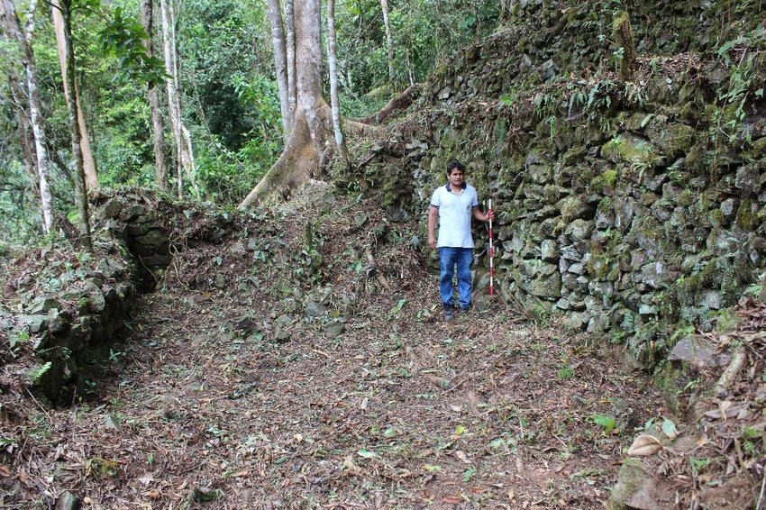
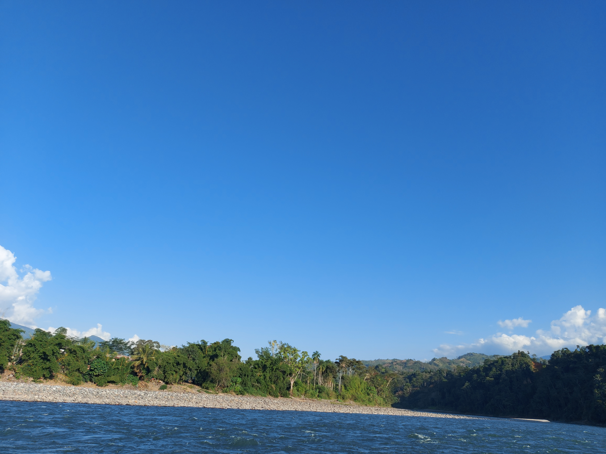
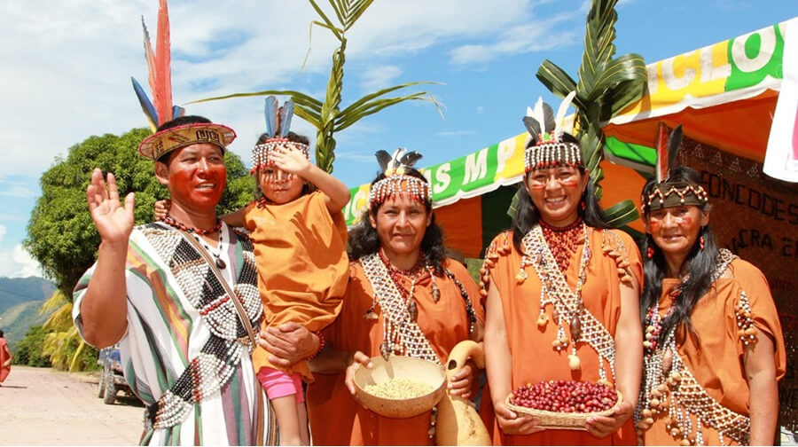

Imagen aérea de Santa Rosa
En primer plano, la Plaza de Armas se erige como el centro neurálgico de la comunidad, rodeada de frondosos árboles y adornada con una fuente central. Las calles adoquinadas se extienden en un patrón ordenado, conectando las viviendas y comercios que conforman el tejido urbano.
Nuestros Atractivos Turísticos
Cedro Cucho
Este asentamiento, recientemente descubierto, revela una serie de estructuras impresionantes, incluyendo terrazas, plazas y recintos rectangulares, construidas con piedras de campo y barro.
Los hallazgos arqueológicos, como hachas de piedra y fragmentos de cerámica, sugieren que Cedro Cucho fue un importante centro de producción agrícola durante el periodo Wari. Aunque la datación exacta del sitio aún es objeto de investigación, su descubrimiento arroja luz sobre la expansión y el impacto de esta civilización preincaica en la región andina.
Río Apurimac (Playa Luisiana): Aventura y Adrenalina
El Río Apurímac, conocido localmente como Playa Luisiana, es un paraíso para los amantes de la aventura y la naturaleza. Sus aguas cristalinas y su amplia extensión te invitan a nadar, relajarte y disfrutar del paisaje. Pero si buscas emociones fuertes, ¡Estás en el lugar correcto!
- Emocionantes paseos en bote
- Deportes extremos
- Velocidad en motos acuáticas
Comunidad Ashaninka
A tan solo dos horas de Santa Rosa, se encuentra una comunidad Asháninka que te invita a sumergirte en su rica cultura y tradiciones ancestrales. Los Asháninka son uno de los pueblos indígenas más grandes de la Amazonía peruana, y su forma de vida en armonía con la naturaleza es un ejemplo de sostenibilidad y respeto por el medio ambiente.
En esta comunidad, podrás participar en talleres de artesanía, aprender sobre plantas medicinales, disfrutar de música y danzas tradicionales, y conocer la cosmovisión y espiritualidad Asháninka. También podrás realizar caminatas por la selva y descubrir la increíble biodiversidad de la región.
Horarios de los Atractivos Turísticos
| Atractivo Turístico | Horario entre semana | Sábado | Domingo |
|---|---|---|---|
| Cedro Cucho | 9:00 AM - 5:00 PM | 9:00 AM - 6:00 PM | 8:00 AM - 6:00 PM |
| Playa Luisiana | Abierto todo el día | Abierto todo el día | Abierto todo el día |
| Comunidad Ashaninka | 10:00 AM - 4:00 PM | Cerrado | 11:00 AM - 3:00 PM |
Más información sobre Santa Rosa
| Sitio web | Descripción |
|---|---|
| Municipalidad Distrital de Santa Rosa | Página oficial del municipio con información sobre servicios, noticias y eventos. |
| Recreo turístico Bella Encantada | Página de Facebook de un atractivo turístico local con fotos, reseñas y detalles de contacto. |
| Reseña de la fiesta Patronal Santa Rosa | Presentación sobre la tradicional fiesta patronal de Santa Rosa, con información sobre su historia y actividades. |